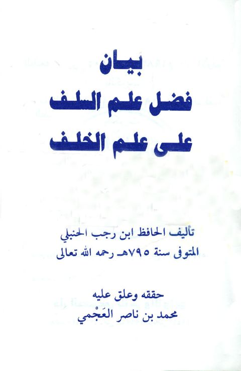

Downloads need an internet connection.
بيان فضل علم السلف على علم الخلف
Authors: ابن رجب الحنبلي
Editors: محمد بن ناصر العجمي
Publishers: دار الصميعي للنشر والتوزيع
**▫️ العنوان: بيان فضل علم السلف على علم الخلف** ▪️ المؤلف: #بن_رجب_الحنبلي ▫️ المحقق: #محمد_بن_ناصر_العجمي ▪️ الناشر: #دار_الصميعي ▫️ تاريخ النشر: 1406 ▪️ بلد النشر: الرياض، #السعودية ▫️ الطبعة: 1 ▪️ عدد الأجزاء: 1 ▫️ الصفحات: 118 ▪️ نوع الوعاء: #كتاب ▫️ التصنيف الرئيسي: #الزهد_والرقائق ۪